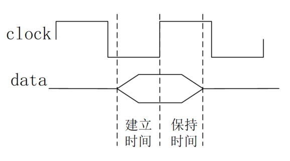
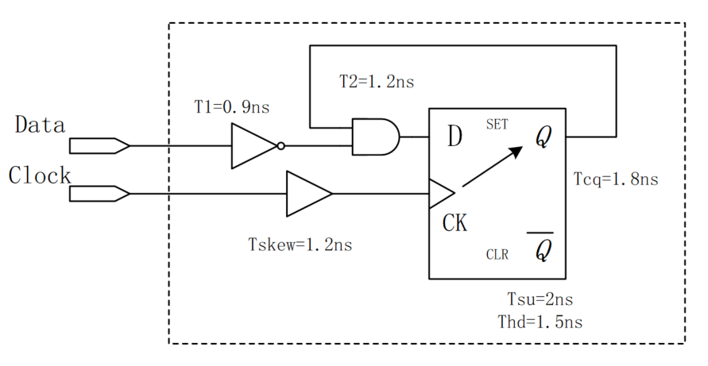

Palabras clave: tiempo de establecimiento, tiempo de retención
Para los sistemas digitales, el tiempo de establecimiento (setup time) y el tiempo de retención (hold time) son la base del temporizado de los circuitos digitales. La estabilidad de un sistema de circuitos digitales depende básicamente de si el temporizado cumple con el tiempo de establecimiento y el tiempo de retención. Por lo tanto, aquí se dedica una sección completa para explicar en detalle los conceptos de tiempo de establecimiento y tiempo de retención.
Conceptos básicos
El tiempo de establecimiento es el tiempo mínimo que los datos deben permanecer estables antes de que llegue el evento de disparo del reloj, para que los datos puedan ser muestreados correctamente por el reloj.
El tiempo de retención es el tiempo mínimo que los datos deben permanecer estables después de que llegue el evento de disparo del reloj, para que los datos puedan transmitirse con precisión por el circuito.
Se puede entender de forma sencilla: antes de que llegue el reloj, los datos deben estar preparados con antelación; después de que llegue el reloj, los datos deben permanecer estables durante un tiempo. El tiempo de establecimiento y el tiempo de retención forman la ventana de estabilidad de los datos, como se muestra en la siguiente figura.

«1.3 Retardo de puertas»ya se presentó un flip-flop D simple. A continuación veamos un flip-flop D típico disparado por flanco ascendente para explicar el origen del tiempo de establecimiento y del tiempo de retención.

Las puertas NAND G1~G4 forman un circuito de mantenimiento-bloqueo, y G5~G6 forman un flip-flop RS.
El reloj actúa directamente sobre las puertas G2/G3. Cuando el reloj está en nivel bajo, los canales de G2/G3 están cerrados; cuando está en nivel alto, los canales se abren para realizar el muestreo y la transmisión de datos.
Pero antes de que los datos lleguen a las puertas G2/G3, pasan por las puertas NAND G4/G1, lo que introduce un retardo de tiempo. El concepto de tiempo de establecimiento se introduce para compensar el retardo de los datos en las puertas G4/G1. Es decir, antes de que llegue el reloj, los datos de entrada en los terminales G2/G3 deben estar listos para que puedan muestrearse correctamente.
Después de que los datos se muestrean por el reloj y antes de transmitirse al flip-flop RS para su latcheo, también deben pasar por las puertas G2/G3, lo que introduce retardo. El tiempo de retención se utiliza para compensar el retardo de los datos en las puertas G2/G3. Es decir, después de que llegue el reloj, se debe garantizar que los datos se transmitan correctamente a las entradas de las puertas NAND G6/G5.
Si los datos no cumplen con el tiempo de establecimiento o el tiempo de retención durante la transmisión, entrarán en un estado metaestable, lo que provocará errores de transmisión.
Restricciones
Restricción del tiempo de establecimiento
La siguiente figura es un diagrama típico de transmisión de datos entre flip-flops. Aquí, "Comb" representa el retardo de la lógica combinacional, "Clock Skew" indica el desplazamiento del reloj, y los datos se disparan en el flanco ascendente del reloj.

Antes de que llegue el reloj, los datos deben estar listos para poder ser muestreados correctamente por el reloj, lo que requiere que la ruta de datos (data path) sea más rápida que la ruta de reloj (clock path), es decir, que el tiempo de llegada de los datos (data arrival time) sea menor que el tiempo requerido de los datos (data required time). Entonces, la expresión que debe cumplir el tiempo de establecimiento es:
Tcq + Tcomb + Tsu <= Tclk + Tskew （1）
La descripción de cada parámetro de tiempo es la siguiente:
- Tcq: retardo desde el terminal clock del registro hasta el terminal Q;
- Tcomb: retardo de la lógica combinacional en la ruta de datos (data path);
- Tsu: tiempo de establecimiento;
- Tclk: período de reloj;
- Tskew: desplazamiento del reloj.
Transformando la ecuación anterior, el período de reloj mínimo que el circuito puede soportar y la frecuencia de reloj máxima en teoría son, respectivamente:
最小时钟周期 = Tcq + Tcomb + Tsu - Tskew 最快时钟频率 = 1 / (Tcq + Tcomb + Tsu - Tskew)
Restricción del tiempo de retención
Después de que llegue el reloj, los datos deben permanecer estables durante un tiempo, lo que requiere que el retardo de datos (data delay time) de la etapa anterior no sea mayor que el tiempo de retención del flip-flop, para evitar que los datos se sobrescriban. Entonces, la expresión que debe cumplir el tiempo de retención es:
Tcq + Tcomb >= Thd + Tskew (2)
La descripción de cada parámetro de tiempo es la siguiente:
- Tcq: retardo desde el terminal clock del registro hasta el terminal Q;
- Tcomb: retardo de la lógica combinacional en la ruta de datos (data path);
- Thd: tiempo de retención;
- Tskew: desplazamiento del reloj.
De las ecuaciones (1) (2) se pueden derivar las restricciones del desplazamiento del reloj, del retardo de la lógica combinacional y del período de reloj.
Se recomienda recordar solo estas dos expresiones de restricción más básicas. Cuando se necesiten obtener otras restricciones de parámetros, se derivan en ese momento, para evitar confusiones de memoria por tantas derivaciones.
Diagrama de tiempos del tiempo de establecimiento y del tiempo de retención
Un diagrama de tiempos complejo sobre el tiempo de establecimiento y el tiempo de retención se muestra a continuación.
Entre ellos, la parte verde representa el margen del tiempo de establecimiento, y la parte azul representa el margen del tiempo de retención. El margen de tiempo es, en realidad, la diferencia de tiempo entre los dos lados de la desigualdad (1) o (2) cuando el circuito cumple con las restricciones de temporización.
建立时间裕量为：（时钟路径时间）-（数据路径时间） 保持时间裕量为：（数据延迟时间） - （保持时间 + 时钟偏移）
Esta figura solo facilita la comprensión de la derivación de las restricciones del tiempo de establecimiento y del tiempo de retención. Si esto pudiera causar confusión en la memoria, se recomienda no profundizar (^_^).

Ejemplos de cálculo
Para comprender mejor los conceptos de tiempo de establecimiento y tiempo de retención, y también para facilitar entrevistas o trabajo, aquí se enumeran algunos problemas típicos sobre tiempo de establecimiento y tiempo de retención como referencia.
Ejemplo 1:
Considerando el retardo de la red (net delay), los valores de retardo de un circuito (unidad: ns) son los siguientes, y el período de reloj es de 15 ns. Determine si el tiempo de establecimiento y el tiempo de retención de este circuito tienen una violación (violation).

Solución:
Aquí se involucran los valores máximo y mínimo del retardo.
Debido a que se requiere que las restricciones de temporización siempre se cumplan, las ecuaciones (1) (2) se transforman en:
max (data path time) <= min (clock path time) min (data delay time) >= max (Thd + Tskew)
Verificación del tiempo de establecimiento:
max (data path time) = 2 + 11 + 2 + 9 + 2 + 2 = 28ns min (clock path time) = 15 + 2 + 5 + 2 = 24ns
Por lo tanto, el tiempo de establecimiento tiene una violación.
Verificación del tiempo de retención:
min (data delay time) = 1 + 9 + 1 + 6 + 1 = 18ns max (Thd + Tskew) = 3 + 3 + 9 + 2 = 17ns
Por lo tanto, el tiempo de retención no tiene violación, y el margen es de 1 ns.
En este ejemplo, no se deben aplicar rígidamente las expresiones del tiempo de establecimiento y del tiempo de retención; más bien, se deben establecer las restricciones a partir de conceptos como la ruta de datos, la ruta de reloj y el retardo de datos. Por lo tanto, las diversas restricciones de temporización deben analizarse según el circuito real.
Ejemplo 2:
Una pregunta de entrevista de una empresa conocida: el período de reloj es T, el tiempo de establecimiento máximo del primer flip-flop D1 es T1max y el mínimo es T1min. El retardo máximo de la lógica combinacional es T2max y el mínimo es T2min. Pregunta: ¿qué condiciones deben cumplir el tiempo de establecimiento y el tiempo de retención del segundo flip-flop D2?
Solución:
El tiempo de establecimiento y el tiempo de retención de la segunda etapa no tienen relación directa con el primer flip-flop, por lo que T1max y T1min aquí son elementos distractores.
En el ejemplo tampoco se dan el retardo del reloj al terminal Q ni el desplazamiento del reloj, por lo que no es necesario considerarlos aquí.
Combinando las indicaciones del Ejemplo 1, el tiempo de establecimiento Tsu y el tiempo de retención Thd de D2 deben cumplir:
T2max + Tsu <= T T2min >= Thold
即
Tsu <= T - T2max Thold <= T2min
En este ejemplo no se consideran muchos tipos de retardo. Al establecer las restricciones de temporización, es necesario saber qué factores se deben tomar o descartar según las condiciones conocidas.
Ejemplo 3:
Un circuito divisor de frecuencia simple se muestra a continuación. El tiempo de establecimiento de este flip-flop es de 3 ns, el tiempo de retención es de 3 ns, el retardo lógico es de 6 ns, el retardo de dos inversores es de 1 ns y el retardo de las conexiones es de 0. ¿Cuál es la frecuencia de operación máxima de este circuito?

Solución:
El retardo lógico aquí debe entenderse como el retardo desde el terminal de reloj hasta el terminal Q. Se debe tener cuidado de que no es el retardo de la lógica combinacional en el circuito.
Debido a que el terminal Q y el terminal D del flip-flop están conectados, se puede entender como una transmisión directa entre dos flip-flops, por lo que la ruta de datos (data path) no tiene retardo de lógica combinacional, solo tiene el retardo de un inversor.
Como solo hay un reloj, tampoco hay desplazamiento de reloj, y el retardo del inversor en la ruta de reloj (clock path) también es un elemento distractor.
Por lo tanto, la restricción de temporización es:
Tcq + Tbuf + Tsu <= Tclk
Se obtiene que la frecuencia de operación máxima de este circuito es:
1 / (6ns + 1ns + 3ns) = 100Mhz。
Este ejemplo es una realimentación del propio flip-flop a sí mismo. Es necesario analizar bien la ruta de datos y la ruta de reloj. A continuación veamos un ejemplo ampliado de este tipo.
Ejemplo 4:
- (1) ¿Cuáles son el tiempo de establecimiento y el tiempo de retención inherentes del siguiente circuito?
- (2) ¿Cuál es la frecuencia de operación máxima de este circuito?

Solución:
Este circuito tiene retardos tanto en la ruta de datos como en la ruta de reloj. Para lograr la misma restricción de tiempo de establecimiento y tiempo de retención que la del flip-flop, el diagrama de tiempos de los terminales D y CK del flip-flop, así como del terminal de datos equivalente Data y del terminal de reloj Clock, es el siguiente (me esforcé mucho por dibujarlo de la manera más simple ~_~):

(1) Según la figura, se puede observar:
El tiempo de establecimiento inherente de este circuito es:2.1 + 2 - 1.2 = 2.9ns
El tiempo de retención inherente es:1.2 + 1.5 - 2.1 = 0.6ns
De esto se deduce que el retardo de la ruta de datos aumentará el tiempo de establecimiento inherente del circuito, pero reducirá el tiempo de retención inherente del circuito. Mientras que el desplazamiento del reloj reducirá el tiempo de establecimiento inherente del circuito y aumentará el tiempo de retención inherente del circuito.
Te lo digo en secreto: obtener el tiempo de establecimiento y el tiempo de retención inherentes del circuito es, en realidad, un proceso de obtener el margen de tiempo.
(2) Este circuito sigue siendo un circuito de realimentación de sí mismo a sí mismo. Por lo tanto, no hay desplazamiento de reloj y tampoco es necesario considerar el retardo de T1 = 0.9 ns. Entonces, la frecuencia de operación máxima es: 1 / (1.8 + 1.2 + 2)ns = 200MHz
Haz clic para compartir notas
<p style="font-size:14px;">¡Las notas deben ser una extensión del contenido de este artículo!</p><br> <p style="font-size:12px;"><a href="../tougao.html" target="_blank">Envío de artículos, haz clic aquí</a></p> <p style="font-size:14px;"><a href="./runoob-user-test-intro.html" target="_blank">Cómo obtener el código de invitación de registro</a></p> <h3 class="text-muted"><i class="fa fa-info-circle" aria-hidden="true"></i> ¡Debes <a href=".." class="runoob-pop">iniciar sesión</a> antes de compartir notas!</h3> <p><a href="./runoob-user-test-intro.html" target="_blank">Cómo obtener el código de invitación de registro</a></p>